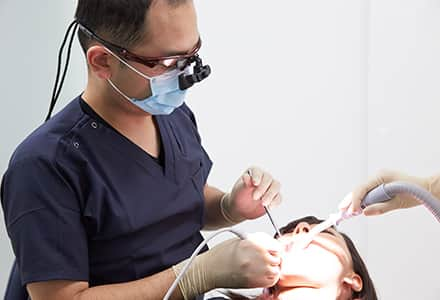
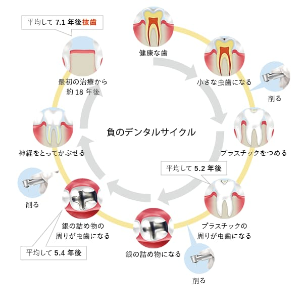
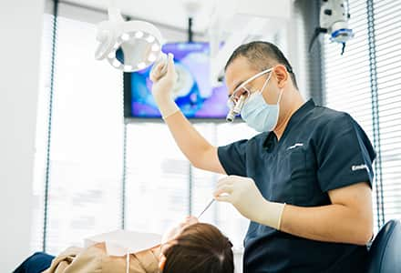
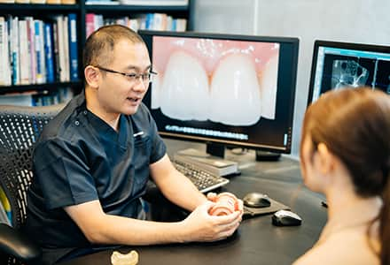
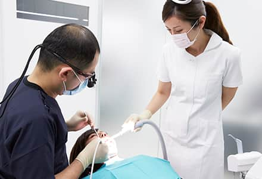
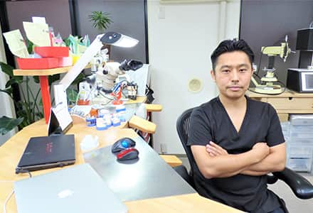
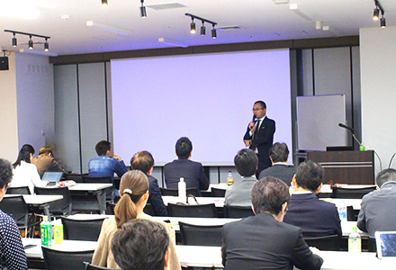

生まれ育った藤沢の地に貢献する
玉木歯科医院の想い

健康な口腔内環境を作り、
生涯を通して「噛める喜び」と豊かな生活をご提供
玉木歯科医院は、藤沢に住む患者様の本当の「健康」と「幸せ」とは何かを考え、どのような治療に対しても常に最善を尽くします。たとえ他院では断られてしまうような難しい治療のケースがあったとしても、患者様が諦めることなく、希望をもっていただけるように診療に挑んでいます。
正しく精度の高い歯科治療を行うことで、『負のデンタルサイクル』と呼ばれている、きちんと通院しているのにもかかわらず再治療になってしまうケース、繰り返しの治療でどんどん歯を削る・最終的には歯を抜かなくてはならないという事態を防ぐことができます。当院では、疾病の早期発見や予防処置を大切にし、「負のデンタルサイクル」を発生させないよう、生涯にわたり健康な口腔内環境を作り、維持します。
当たり前のことを誠実に追求し、患者様から「玉木歯科医院であれば大丈夫」と心から信頼される歯科医院を目指し、安心をご提供します。

お口全体を考えた、包括的な診療
本当の健康のために、1本の歯だけではなく、お口全体を考えた包括診療

歯周病や虫歯はお口の中で様々な要因が合わさり発症するため、“痛みのある歯”だけを治療しても根本的なところは改善されません。そのため、歯肉の状態や噛み合わせなど、“お口全体”を考えた包括的な診療が必要です。また、歯周病や虫歯になってしまった原因を根本的に改善し、口腔全体の環境を良い状態にすることで、再発のリスクを下げることができます。
当院では、お口全体のことをよく知る日本歯周病学会専門医・指導医である院長が、的確な診査・診断を行います。豊富な経験、確かな技術、知識、設備を活用して患者様の真に豊かで不自由のない生活と健康をサポートすることができます。
患者様と共に歩み、“きちんと噛める”喜びを追求

たとえ他院で断られてしまうような難症例でも、患者様の絶対に治したいという思いと共に歩み、解決のために必要な技術を追い求めています。そして、「噛める喜び」をご提供し、見た目もきれいであり続けられるようサポートします。患者様のお気持ちに応えられるよう、目標を立て共にゴールを目指します。そして、どんなに時間がかかっても真剣に向き合い、日々努力を惜しまず常にベストを尽くす決して諦めない治療を行っています。治療後も、患者様と二人三脚で歩み、一生涯自分の歯で噛める喜びをご提供し続けます。
プロフェッショナル集団と連携、高い精度の追求

当院では、院長が日本歯周病学会専門医・指導医としての知識・経験・技術を生かし、患者様のご要望やお悩みにお応えします。さらに大学病院で根管治療を専門に行っている歯科医師や矯正治療のスペシャリスト、口腔外科専門医、耳鼻咽喉科専門医、国内トップレベルの歯科技工士や健康を保つためにサポートをする歯科衛生士など、各プロフェッショナルと連携することで、精度を追求した正しい治療を行っています。
患者様に本当に合った真の治療かを判断し、専門家たちの知識や技術力が集まって初めて精度の高い治療を提供することができると考えております。そのために、院長・スタッフ全員が一丸となり、時間を惜しまず日々治療に挑んでいます。
長年の経験と知識に長けた歯科技工士 小見川淳氏

歯科技工士歴25年以上の名実ともに日本トップレベルの技工士。若手育成のために技工士向けセミナーも行っており、執筆論文が多数あります。
要望に誠実かつ忠実に応えてくれるだけでなく、豊富な知識と経験から更なるクオリティのものを完成させるため、こちらの意図を理解し寄り添ったご提案をしてくださるプロフェッショナルです。材料がいくら良くても、製作する技工士の技術が低ければ良い技工物は完成しません。当院の扱う歯のかぶせ物や入れ歯などは、一から時間と手間をかけこだわりをもって作っており、高いクオリティと価値あるもののみをご提供しています。
論文・掲載記事等に
ついてはこちら
【2016年2月20日】
ジルコニアを用いたセラミックスレストレーション
日本歯技 (Journal of the Japan Dental Technologists Association) 号：561ページ：1-8
【2015年10月10日】
Initial MCを用いたmetal ceramics-新オペーク陶材とリカバリー陶材「CST」-
QDT Art & Practice (QDT Art & Practice) 巻：40 号：10ページ：1472-1485
【2012年10月10日】
ONEBODY CONCEPTによる築盛テクニック
QDT Art & Practice (QDT Art & Practice) 巻：37号：10ページ：1280-1302
【2008年10月15日】
新しいコーティング材「ナノコートカラー」を用いた臨床
歯界展望 (月刊歯界展望)巻：112号：4ページ：663-669
【2008年4月01日】
ファイバー補強の臨床・技工における材料選択基準と技工操作-ファイバーによる補綴物補強の基礎知識・臨床手技から最新の研究・トピックスまで-第7回 ファイバー補強型補綴物製作の基礎手技について
月刊歯科技工 (歯科技工) 巻：36号：4ページ：458-464
【2006年7月10日】
最新 歯冠修復用コンポジットレジンと各種ファイバーの臨床・技工 Part 3 歯冠修復用コンポジットレジンの技工(3)グラディアフォルテ
月刊歯科技工(歯科技工)号：別冊(7月)ページ：96-105
【2006年4月01日】
ハイブリッドレジン自由自在-高強度・高操作性ハイブリッドレジンシステムによる審美的補綴・修復物製作のノウハウ
月刊歯科技工(歯科技工)巻：34号：4ページ：447-486
【2006年1月10日】
QDT Selected ARTICLE Japan 超高強度MFRナノハイブリッドタイプ-グラディアフォルテの特徴と技工操作-
Quintessence of Dental Technology (Quintessence of Dental Technology)巻：31号：1ページ：103-117
【2000年8月10日】
新しい光重合型超硬質レジンの特徴と技工操作 MFRハイブリッドタイプ“グラディア”の全貌
Quintessence of Dental Technology (Quintessence of Dental Technology)巻：25号：8ページ：28-41
正しい知識と技術を伝え、未来のための人材育成を行う

藤沢の皆さまにいつまでも豊かな生活を送り続けていただけるよう、本物の治療を提供し続けたいという想いがあります。そのため、正しい知識・正確な技術を伝え続け、将来、患者様の豊かな生活を支えることのできる、若い人材の育成にも取り組んでいます。当院は、国から認められた日本歯周病学会専門医研修施設として認定医・専門医の積極的育成を行っています。また、日本歯周病学会の専門医委員会が認めた歯周病に関する学会および研修会を主宰する医院として、外部の先生にも門戸を広げた勉強会を行っており出席者は認定医・専門医の単位認定が可能となっています。
さらに、日本大学歯学部兼任講師としても指導を行っております。
技術や知識面についの指導はもちろん、将来に不安を抱えている学生や研修医の相談にものっています。自身の経験を活かし、伝えられることはすべて伝え、未来を担う学生に歯科医師としての夢と希望を与えられるように接しています。
この先の未来も”本物の治療”を提供し歯科業界に貢献するだけでなく、この藤沢という土地で、当院から頼れる歯科医師を輩出し続けることで、地域貢献に努めます。